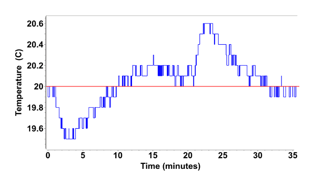

Good Manufacturing Practices
For more information, see:
What are Good Manufacturing Practices?
Good Manufacturing Practices (GMP) are a set of operating and instrument standards which dictate a processes control requirements and documentation. GMP environments provide assurances to the consumer and any regulatory agencies that: best practices were followed; results are validated, and can be audited; quality standards are observed, and; any risks are minimized throughout the procedure.
Specifically, the criteria that must be met for GMP validation include:
[✓] Audit trail for any transation on data and results
[✓] Reproducibility needs to be assured as much as possible
[✓] Control as many parameters as possible
[✓] Restricted access to data, experimental procedures
[✓] Validated standards for comparison
[✓] Validate instrument operation and functions
GMP Obstacles in AUC
Within the AUC lab, there are several issues that can be determined which affect the authenticity of data analysis procedures.
-
Human error can be found in the form of the manual process of sample handling and AUC cell loading. There is a certain dexterity that is required to achieve reproducible loading volumes, as well as proper alignment of cells in the rotor.
-
There are a large number of operational variables which would need individual validation, before their effect on results can be minimized.
-
There is weakness in the chain of data custody. This impairs the audit trail, and can allow for potential manipulation/falsification of primary research data. For example, the traditional data acquisition software is disconnected from the analysis process, and thus requires manual data transfer between multiple computers.
-
Traditional data acquisition is performed on undocumented software. This software is often closed-source freeware, preventing any source code auditing, leaving no assurances for the users that the software follows any stringent GMP documentation requirements.
-
Important parameters are not routinely checked for consistency. Resolution information content is affected by: number of scans in the experiment, duration of experiment, loading volume, and column length. Loading concentration can affect the mass action of reversible systems and non-ideality parameters. Chromatic aberration can cause incorrect radial reporting when recording wavelengths.
-
Data quality is not checked for consistency. Data editing, analysis algorithms, and analysis parameters can be left up to an user to change at will. Data interpretation is affected by analysis parameters (grid size, grid resolution, edited data ranges, buffer corrections) and hardware parameters (rotor stretch corrections).
-
Reporting is not an automated process. The processing of data is manual and based on a subjective interpretation of results. That interpretation does not necessarily include standard metrics for comparison that can be automated and applied without user bias.
Parameters Subject to Error
A recent multi-labratory study demonstrated the importance of accurate reference materials to provide improved validation for the AUC.1 Accurate reference materials are also useful in that they will complement the resolution gains offered by modern analysis software. The following hardware components of the AUC instrument have been found to affect analysis results.
Cell Component Quality
Chromatic Aberration
While investigating the accuracy of radial recordings made on the Optima AUC, it was noted that there was the presence of wavelength dependence on the radial positions collected as a result of chromatic aberration, a phenomenon related to the variability of refraction at different wavelengths.
Electric Power Supply Stability
Optics: Light Intensity, Alignment, Force Integrals
Radial Calibrations
Record Time and Centrifugal Force Integrals
Rotor Speed
Stretching or Contracting of the Rotor in Response to Speed Changes
What is rotor stretching and how do we know it is occuring? We noticed that the Lamm Equation was being solved with incorrect boundary conditions. Typically, we expect the bottom of the cell to be routinely held constant at the known position at rest. However, the absolute radial position of the sample cell was shifting. Finite element solutions of the Lamm Equation require accurate knowledge of the boundary consitions, which include the radial positions of the meniscus and bottom location ofthe sample cell. Any error in these boundary conditions, or the absolute radial positionscollected will affect the fitte values of the sedimentation and diffusion coefficients. This error propogates to the calculations of biomolecular attributes. Stretching or contracting of the rotor changes these boundary conditions, and thus must be known. Specifically, the titanium rotors, when spun at very high speeds, were stretching a finite amount, changing the boundary conditions of the experiment compared to those at rest or a different speed.

Consider the figure: this is a temperture-time graph for a rotor spinning from rest to 60,000 RPM, resting for 15 mins, and then decelerating back down to rest. Notice how there is a temperature decrease intially as the rotor accelerates; the acceleration period takes ~5 minutes. As the speed increases the rotor needs energy to stretch out and so it takes it from its environment. The chamber will notice this change and correct the temperature to the stated temperature. This correction occurs while to rotor spins at 60,000 RPM for 15 minutes. After this time has elapsed, the rotor spins down to rest and no longer needs the heat energy it took from the environment and so it releases it, causing an increases in temperature. Again, the chamber will correct for this change. The valley and peak have approximately the same area, and this change in temperature is adiabatic.
Temperature
Controllable/Checkable Parameters
Experimental Parameters
Rotor speed, number of scans, wavelength, optics, radial range, cell components, rotor selection.
Data Collection
Cell Loading Volume and Concentration
Analysis Parameters
Security (Encryption, Authentication) and Data Access
Use of Validated Standards
Use of Structured Query Language (SQL)
SQL with relational database to store associated data and record access
-
Zhao, H., Ghirlando, R., Alfonso, C., Arisaka, F., Attali, I., Bain, D. L., Bakhtina, M. M., Becker, D. F., Bedwell, G. J., Bekdemir, A., Besong, T. M. D., Birck, C., Brautigam, C. A., Brennerman, W., Byron, O., Bzowska, A., Chaires, J. B., Chaton, C. T., Cölfen, H., Schuck, P. (2015). A multilaboratory comparison of calibration accuracy and the performance of external references in analytical ultracentrifugation. PLoS ONE. https://doi.org/10.1371/journal.pone.0126420↩